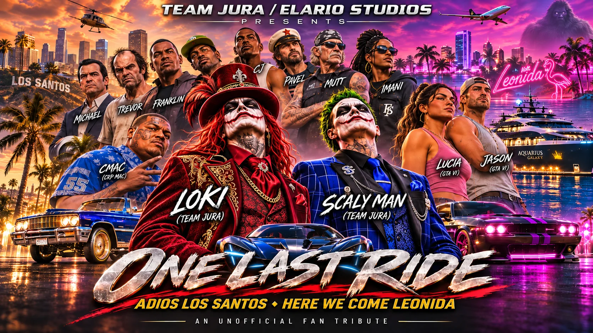

YOUR NEXT CHAPTER
Your world. Your next move.
Enter the Atlas dashboard for native maps, collection trackers, route tools, saved garage records, character galleries and a full Universe Database.
Open your dashboard ›Elario Studios Presents · Team Jura Original
MANY CREWS. ONE VISION.
Public development preview
From Los Santos to Leonida. Explore game worlds, build your next route, track discoveries, and make the Atlas your own. No account required.
Start from our public Elario poster, then enter the full Atlas dashboard. Secure sign-in is being developed; guest play and manual progress backups work now. No download or account is required.
Independent fan-made GTA companion. Not affiliated with Rockstar Games or Take-Two Interactive. GTA VI launched November 19, 2026; our community coordinates and schematic overlays remain provisional until checked against the released game and Rockstar’s official map.
START EXPLORING · FOUR FEATURED WORLDS
GTA V Story and Online progress stay separate. GTA VI community locations are labeled as research until verified.
YOUR NEXT CHAPTER
Enter the Atlas dashboard for native maps, collection trackers, route tools, saved garage records, character galleries and a full Universe Database.
Open your dashboard ›
ORIGINAL COMMUNITY STORIES
Explore our nine-chapter farewell-to-Los-Santos film treatment and watch the current motion-poster preview. The full animated film is in development.
Explore One Last Ride ›MANY CREWS · ONE VISION
Explore the maps, personalize your progress and share the Atlas from the social buttons in the footer. No social package or JSON file needs to be loaded.
Enter your Atlas dashboard ›